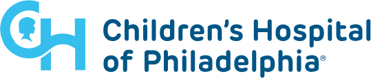
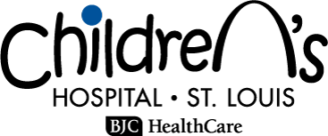
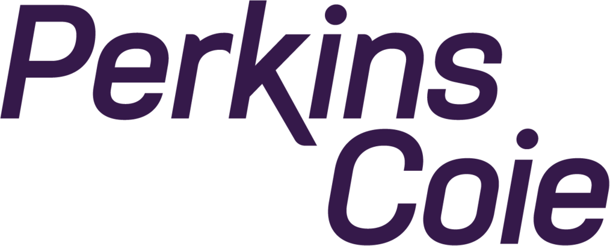

About me
Hello! My name’s Amanda and I’m a UX Designer based in Boston, MA. I strive to make a difference in people’s lives by practicing empathy, understanding, and offering creative solutions. I’m currently working at USCIS on the Electronic Immigration System (ELIS).
browse my workMy story
As a registered nurse who mainly cared for patients undergoing cancer treatment, I felt immense joy whenever I positively impacted an individual’s life. One of the main reasons I became a UX Designer is to be able to impact lives on an even greater scale. I have learned to use the skills I acquired as a nurse to design usable products with a human-centered approach.
The world continues to become more connected through the internet and technology, so we must focus on finding the positive ways that different groups of people can be brought together. Recent events have shown us that collectively we can make a difference by working together and learning from one another.
As a UX Designer, I focus on understanding users through research which includes real-world data, empathizing with user needs, and conversations that lead to impactful insights. Having a foundation of understanding allows my designs to have the greatest impact. This belief is a continuation of my practice of holistic nursing that I developed while working in healthcare.
When I am not designing
When I am not designing, I enjoy spending time fixing up my 100+ year old house, baking yummy treats, propagating plants, or reading lots of books.
Clients I've worked with



My experience
2021 - Present
Experience Strategist at Phase2 Technology
2020 - 2021
Design bootcamp at Designlab
2018 - 2020
Clinical Research Nurse at City of Hope
2016 - 2018
Registered Nurse at Tufts Medical Center
2014 - 2016
Patient Care Assistant at Brigham and Women's Hospital